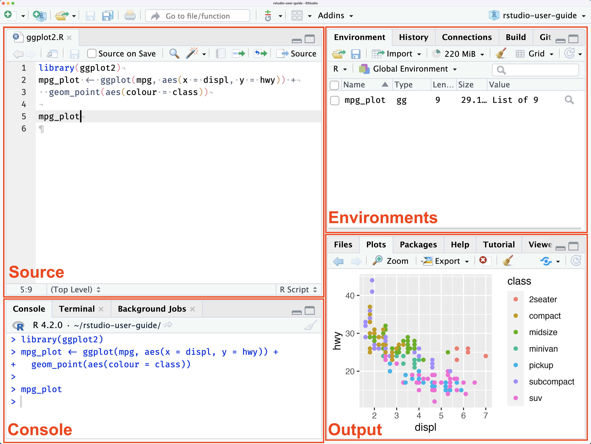
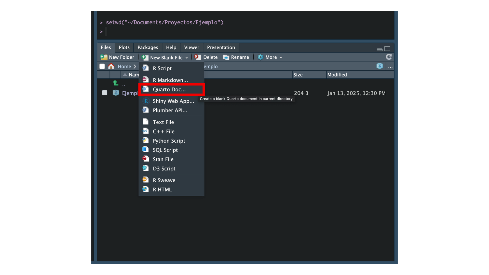
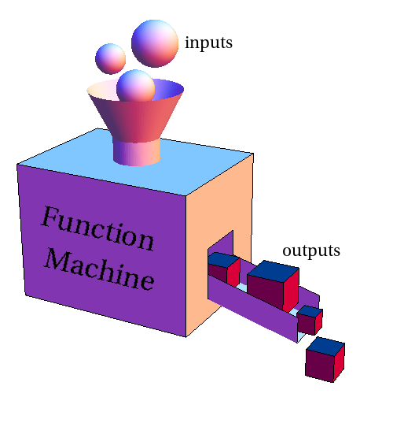
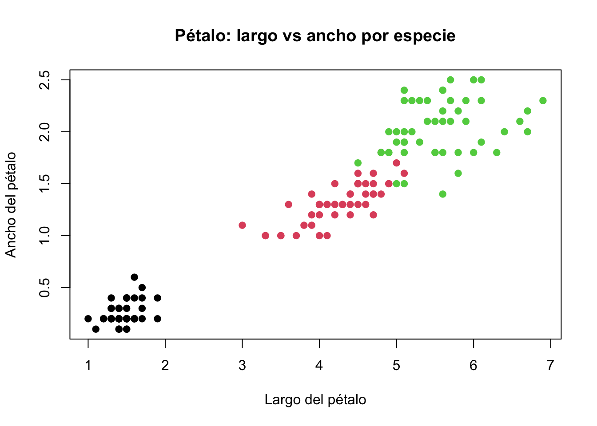

# Aquí escribes tu código en RSesión 1: Introducción
Objetivos de la sesión de hoy
Familiarizarse con el entorno R y RStudio, comprender la estructura básica del lenguaje, instalar y cargar paquetes, e importar bases de datos en diversos formatos. Primer contacto con la exploración estructural de datos.
Interfaz
Para empezar, vamos a utilizar RStudio por ello, lo primero que debemos hacer es familiarizarnos con la interfaz. Al abrirlo, probablemente lo primero que veas es lo siguiente.

Hay cuatro paneles, cada uno indispensable y con un conjunto de funcionalidades:
Source: Todo el código que escribes en R se realiza en el panel Source. El código R es simplemente tu conjunto de instrucciones en el lenguaje R para que la computadora complete las tareas dadas.
Consola: La consola es la consola interactiva R. Aquí es donde la mayoría de las funciones se ejecutan al instante. Aquí es donde aparecen los resultados de los cálculos y procedimientos que hemos solicitado al programa. Se utiliza principalmente para una verificación rápida y también para ver el resultado de tus scripts.
Entorno: La pestaña Entorno es la lista de todos los objetos que has creado en tu trabajo. Algunos ejemplos de objetos son vectores, matrices, data frames, listas, gráficos y funciones.
Archivos/Gráficos/Paquetes/Ayuda:
- Archivos: Son para navegar por el sistema de archivos de tu computadora directamente desde RStudio.
- Gráficos: Después de ejecutar el código R, puedes ver las imágenes creadas por el código R.
- Paquetes: La herramienta gestiona los paquetes que has instalado.
- Ayuda: El equivalente de Google para R. Puedes buscar cualquier información sobre las funciones e incluso encontrar el tutorial necesario.
La ventaja original del panel Source es la capacidad de editar rápidamente tu código, el cual puedes volver a ejecutar. Este aspecto incluye tanto la reproductividad como la eficiencia; por ejemplo, podemos ajustar nuestro código sin rehacerlo desde cero. Además, podemos guardar nuestro trabajo como un archivo, podemos almacenar nuestros scripts en un editor de computadora, podemos distribuirlo, podemos editarlo o publicar este archivo nuevamente. Pero para trabajar de manera organizada, también es importante tener una buena estructura para almacenar todo lo relacionado con el proyecto.
Cuando trabajamos en proyectos de análisis de datos, es común manejar varios archivos relacionados: tus scripts (donde escribirás el código), los datos que analizarás y los resultados generados. Tener una carpeta específica para cada proyecto te ayuda a mantener todo organizado en un solo lugar. Además, R necesita saber dónde buscar y guardar los archivos, y eso se define mediante el directorio de trabajo, que es simplemente la carpeta donde R guardará y buscará archivos automáticamente para el proyecto en específico.
Crear un archivo de script
Cuando trabajamos en R, utilizamos diferentes tipos de archivos para organizar y guardar nuestro trabajo. Dos formatos comunes son el archivo R Script y el documento Quarto. Ambos se utilizan para escribir código, pero cumplen propósitos diferentes que es importante entender.
Un archivo R Script es un archivo simple donde escribimos y guardamos nuestras instrucciones de código. Sirve como un registro de los comandos que ejecutamos, permitiendo reutilizarlos o ajustarlos más adelante. Sin embargo, este tipo de archivo no incluye espacio para explicaciones extensas ni muestra los resultados directamente junto al código.
En cambio, un documento Quarto va más allá al permitir combinar texto explicativo, bloques de código y los resultados generados (como tablas y gráficos) en un solo archivo. Además, es posible exportar el archivo final en formatos como HTML, PDF o Word, haciéndolo ideal para documentar y compartir análisis de manera profesional (de hecho, este libro esta hecho en Quarto). Esta capacidad de integrar explicación, análisis y presentación en un mismo lugar hace que Quarto sea particularmente útil para aprender y comunicar análisis de datos. En nuestras clases, vamos a utilizar documentos Quarto.
Accede a la ventana Files:
- En RStudio, localiza el panel Files. Este panel muestra el contenido de la carpeta de trabajo que configuraste previamente.
Crea un nuevo documento Quarto:
- En el panel Files, haz clic en el botón New File y selecciona Quarto Document.

- Aparecerá un cuadro de diálogo donde puedes configurar el título del documento, tu nombre y el formato de salida inicial (HTML es una buena opción para empezar). Haz clic en Create.
Guarda automáticamente en la carpeta de trabajo:
- Cuando crees el documento desde la ventana Files, este se guardará automáticamente en tu carpeta de trabajo configurada. No necesitas realizar pasos adicionales para seleccionar la ubicación.
En un archivo Quarto puedes combinar texto explicativo (en formato Markdown) con bloques (chunks) de código en R. Los bloques de código son las secciones donde escribirás las instrucciones que deseas ejecutar, y están delimitados por tres backticks (```) seguidos del lenguaje que estás utilizando (en este caso, r). Para agregar un bloque de código de manera rápida, puedes utilizar el atajo de teclado:
- Ctrl + Alt + I en Windows y Linux.
- Cmd + Option + I en Mac.
Este atajo insertará automáticamente un nuevo chunk en tu documento, con la estructura básica para que puedas empezar a escribir tu código. Un chunk de código tiene este formato:
Dentro del chunk, puedes incluir cualquier instrucción que se ejecutará cuando proceses el documento. Esto permite mantener el texto explicativo y el código separados pero integrados en el mismo archivo.
Importante
Es primordial que trabajes directamente desde tu carpeta de trabajo, asegurando que todos los archivos relacionados con el proyecto estén organizados en una carpeta.
Elementos
Los elementos son la unidad mínima de información. Puede representar un valor numérico, una palabra, o una afirmación. Cuando usamos R, escribimos estos elementos directamente en la consola o los usamos dentro de otros objetos más grandes.
Saber reconocer qué tipo de elemento estamos usando es fundamental para entender cómo se comporta en el código y qué operaciones podemos hacer con él.
Dato
En R existen varios tipos de datos, pero podemos empezar por los tres tipos básicos que se usan todo el tiempo:
Numéricos, para representar cantidades.
Texto, para representar palabras o frases.
Lógicos, para representar afirmaciones verdaderas o falsas.
Numérico
class(5)[1] "numeric"-3[1] -33.5[1] 3.5Texto
class("Hola")[1] "character""Perú"[1] "Perú""El servicio fue ineficiente"[1] "El servicio fue ineficiente"Lógico (verdadero/falso)
class(T)[1] "logical"F[1] FALSEOperaciones básicas con elementos
En R, al igual que en otros lenguajes de programación, es fundamental comprender cómo manipular distintos tipos de datos mediante operaciones básicas.
Operadores matemáticos:
Permiten realizar cálculos aritméticos entre valores.
- \(a + b\) →
a + b
- \(a - b\) →
a - b
- \(a \times b\) →
a * b
- \(\frac{a}{b}\) →
a / b
- \(a^b\) →
a ^ b
- \(\sqrt{a}\) →
sqrt(a)
Suma
5 + 3[1] 8Resta
10 - 4[1] 6Multiplicación
5*6[1] 30División
30/5[1] 6Potencia:
5^2[1] 25Operaciones en paréntesis
(2 + 3) * 10 [1] 50Los elementos lógicos son tratados como 0 y 1
FALSE + FALSE[1] 0TRUE + TRUE[1] 2TRUE + FALSE[1] 1
Cuidado
Los elementos de texto no están diseñados para realizar operaciones aritméticas como suma o multiplicación. Si intentas hacerlo, obtendrás un error. Esto se debe a que, a diferencia de los números, el texto no representa cantidades numéricas sobre las que se pueda operar.
Error:
"Hola" + "Que tal"Error in “Hola” + “Que tal” : non-numeric argument to binary operator
Operadores de comparación
Permiten evaluar relaciones entre valores. Devuelven siempre un valor lógico: TRUE o FALSE.
- \(x = y\) →
x == y: Igualdad - \(x \neq y\) →
x != y: Desigualdad - \(x < y\): Menor que
- \(x \leq y\) →
x <= y: Menor o igual que - \(x > y\): Mayor que
- \(x \geq y\) →
x >= y: Mayor o igual que
5 == 5 [1] TRUE3 != 2 [1] TRUE10 < 8 [1] FALSE4 >= 4 [1] TRUEOperadores lógicos
Permiten combinar condiciones. Estas expresiones también devuelven TRUE o FALSE.
Negación lógica: \(\lnot x\) →
!xInvierte el valor lógico dex.Conjunción lógica (Y): \(x \land y\) →
x & yDevuelveTRUEsolo si ambas condiciones son verdaderas.Disyunción lógica (O): \(x \lor y\) →
x | yDevuelveTRUEsi al menos una condición es verdadera.
Negación lógica
!TRUE [1] FALSE!FALSE [1] TRUEConjunción lógica (Y)
(5 > 3) & (2 < 4) [1] TRUE (10 > 3) & (1 > 5) [1] FALSEDisyunción lógica (O):
(4 < 2) | (7 > 1) [1] TRUE (3 == 5) | (2 > 10) [1] FALSEObjetos
Los objetos son estructuras donde guardamos información para poder reutilizarla, manipularla o transformarla más adelante.
Crear un objeto es como ponerle nombre a un dato o conjunto de datos. Una vez creado, ese nombre puede usarse para hacer cálculos, funciones, gráficos y más.
Dato
En R, los objetos se crean con el operador <- o el =, que se lee como “le asigno”.
Por ejemplo:
x = 5Aquí estamos diciendo: crea un objeto llamado x y asígnale el número 5.
¿Qué puedo guardar en un objeto?
Prácticamente todo, puedes guardar:
- Un número:
x = 10 - Una palabra:
nombre = "Gonzalo" - Un valor lógico:
es_mayor = TRUE
Una vez creado el objeto, puedes llamarlo por su nombre:
Si
x = 10Entonces…
x[1] 10Y también usarlo en operaciones:
Siendo \(x = 10\)…
x + 2[1] 12
Consejo
Un buen nombre para un objeto debe ser claro, sin espacios ni tildes. Puedes usar guiones bajos (_) para separar palabras: por ejemplo, edad_promedio es mucho mejor que ep o e.p..
Tipos de objetos en R
En R, no todo es solo un número o una palabra. Muchas veces necesitamos guardar varios elementos juntos, y para eso usamos diferentes tipos de objetos. Cada uno tiene su propia estructura y sirve para distintos propósitos.
Los principales tipos de objetos son:
Vectores
Conjunto de elementos del mismo tipo (todos números, o todos textos, o todos lógicos).
edades = c(18, 21, 25)
nombres = c("Ana", "Luis", "María")edades[1] 18 21 25nombres[1] "Ana" "Luis" "María"Matrices
Como una tabla, pero con solo un tipo de dato (por ejemplo, solo números).
matriz = matrix(1:6, nrow = 2)matriz [,1] [,2] [,3]
[1,] 1 3 5
[2,] 2 4 6Listas
Conjunto de elementos que pueden ser de distintos tipos y formas.
mi_lista = list(nombre = "Andrés", edades, aprobado = TRUE)mi_lista$nombre
[1] "Andrés"
[[2]]
[1] 18 21 25
$aprobado
[1] TRUEData frames
La estructura más usada para bases de datos. Cada columna es un vector y puede tener un tipo diferente (números, textos, etc.).
datos = data.frame(nombre = c("Ana", "Luis"), edad = c(18, 21),
aprobado = c(T, F), horas_estudio = c(15, 9))datos nombre edad aprobado horas_estudio
1 Ana 18 TRUE 15
2 Luis 21 FALSE 9Al trabajar con datos en R, no solo importa tener la información: también importa cómo está organizada. Los objetos nos permiten guardar, transformar y analizar datos de formas muy distintas. Por eso, conocer sus tipos es esencial.
Dato
Cada tipo de objeto cumple un rol distinto:
Un vector te permite guardar variables como edad, ingresos o respuestas a una encuesta.
Un data frame organiza esas variables como columnas, ideal para trabajar con bases de datos reales.
Una lista puede guardar resultados de modelos, gráficos o varios tipos de objetos juntos.
Funciones
Hasta ahora hemos usado expresiones como c(), matrix(), list() o data.frame() para crear objetos. Todas estas expresiones tienen algo en común: son funciones.
Una función en R es una herramienta que realiza una tarea específica. Tiene un nombre (como sum() o mean()), y entre paréntesis le damos la información que necesita para trabajar: estos son los argumentos de la función.
Piensa en la funciones como pequeñas máquinas: tú pones algo dentro, la función lo procesa y te devuelve un resultado.

En R todo se hace con funciones: importar datos, limpiar variables, calcular estadísticas, hacer gráficos o modelos,todo eso se logra llamando a funciones específicas.
Saber cómo usar una función y cómo entender lo que devuelve, es uno de los pasos más importantes para poder avanzar en análisis de datos con R. Por ejemplo:
c(): Esta función combina elementos para volverlos vectores. Si le das 1, 2 y 3, te devuelve un solo objeto que los contiene:
c(1, 2, 3) [1] 1 2 3sum(): Esta función suma los números que le das. Si metes 5, 10 y 15, te devuelve 30:
sum(5, 10, 15) [1] 30Algunas funciones permiten no solo darles valores, sino también ajustar cómo se comportan usando otros argumentos. Por ejemplo, la función mean() puede recibir instrucciones adicionales como trim o na.rm.
Consejo
Cuando una función necesita varios valores como insumo (por ejemplo, varios números), estos deben ir agrupados dentro de un vector, usando c(). Así, le estás dando a la función un solo bloque de datos, y evita confsuión con otros argumentos.
mean(): Esta función calcula la media aritmética de los valores que pongas dentro:
mean(c(10, 20, 30)) [1] 20Aunque parezca que solo le estamos pasando tres números, en realidad estamos entregándole un solo objeto: un vector que contiene esos valores.
Pero también podemos darle más indicaciones a través de otros argumentos
Este promedio elimina los datos faltantes (NA) antes de hacer el cálculo:
mean(c(10, 20, NA, 30), na.rm = TRUE)[1] 20Aquí calculamos el promedio después de eliminar un 20% de los valores extremos (en total, un 10% abajo y un 10% arriba). Esto es útil cuando hay valores atípicos que podrían distorsionar el promedio.
mean(c(0.5, 20, 30, 40, 100), trim = 0.2)[1] 30Así como puedes darle un bloque de datos a una función, también puedes pedirle que cuente cuántos elementos hay en un detemrinado objeto. Para eso usamos la función length().
length(c(5, 8, 10))[1] 3Este código le pide a R que diga cuántos elementos hay dentro del vector. En este caso, la respuesta será 3 porque el vector tiene tres números.
length() no se limita a vectores numéricos. También puedes usarlo con vectores de texto, lógicos, o listas. Es una función muy útil para entender el tamaño de un objeto, especialmente cuando estás explorando o limpiando datos.
length(c("perro", "gato", "ratón"))[1] 3
A tomar en cuenta
El análisis de datos se construye función por función. Cada paso, desde importar los datos hasta graficarlos, implica aplicar una función distinta. Aquí algunos ejemplos:
read.csv("datos.csv")→ Leer datos desde un archivo.csv.mean(ingresos)→ Calcular el promedio de una variable numérica.table(sexo)→ Contar frecuencias de una variable categórica.plot(edad, ingresos)→ Graficar la relación entre dos variables.summary(datos)→ Resumir un conjunto de datos.
Aprender funciones en R es como aprender vocabulario en un idioma: cada función es como una palabra con un uso y una forma particular. Algunas hacen algo con lo que les das (como mean()), otras simplemente te devuelven información (como length()). Saber cómo se usan es lo que te permite construir sentencias útiles en lenguaje R.
Data Frames
Cuando recolectamos o hacemos uso de conjuntos de datos, estos suelen estar almacenados en estructuras tabulares, lo que facilita su comprensión y análisis. Una estructura tabular se refiere a una organización de los datos donde cada columna representa una variable (es decir, una característica o atributo que estamos observando), y cada fila corresponde a una observación (un registro individual de los datos, como un caso o instancia). En R, la forma más común de trabajar con este tipo de estructuras es a través de objetos denominados data.frames.
Un data.frame es una estructura que nos permite agrupar varios vectores bajo un mismo objeto.
nombres = c("Ana", "Luis", "María")
edades = c(23, 35, 29)
ingresos = c(1500, 2100, 1800)
Cuidado
Todos los vectores deben tener el mismo largo porque cada fila u observación representa una unidad de análisis completa.
Podemos generarlo con data.frame
datos = data.frame(nombres, edades, ingresos)
Importante
Aunque esta es una forma de generar un data.frame, en la práctica, la mayoría de los conjuntos de datos no se crean desde cero. Normalmente, los datos provienen de otras fuentes, como archivos de texto, hojas de cálculo o bases de datos.
datos nombres edades ingresos
1 Ana 23 1500
2 Luis 35 2100
3 María 29 1800Podemos acceder a las columnas con el signo $, por ejemplo:
datos$edades[1] 23 35 29Si estás familiarizado con Excel puede pensar en un data.frame como una hoja de cálculo: tiene columnas que agrupan distintos tipos de información (números, texto, categorías). Lo interesante es que en R podemos analizar y transformar esa tabla aplicando funciones específicas sobre sus columnas.

Para observar el data.frame de manera visual, RStudio ofrece herramientas muy convenientes. Podemos localizar el nombre del data.frame en el panel “Entorno” (Environment) y hacer clic en el ícono de la tabla que aparece al lado. Esto abrirá una vista interactiva en forma de hoja de cálculo, donde podrás explorar las filas y columnas de tu conjunto de datos.

Otra forma, desde la consola, es usar la función View(). Por ejemplo, si tu data.frame se llama encuesta, simplemente escribe el siguiente código en la consola:
View(encuesta)Recuerda que una función en R sigue esta forma básica:
nombre_función(argumento_1, argumento_2)A veces necesita un solo argumento, otras veces más. Algunas funciones nos piden datos para calcular algo, otras simplemente nos dicen algo sobre esos datos.
Partamos de un ejemplo
El conjunto de datos iris con R y contiene mediciones de 150 flores de iris, divididas en tres especies distintas. Cada fila representa una flor, y las columnas son medidas de sus pétalos y sépalos:
head(iris, 4) Sepal.Length Sepal.Width Petal.Length Petal.Width Species
1 5.1 3.5 1.4 0.2 setosa
2 4.9 3.0 1.4 0.2 setosa
3 4.7 3.2 1.3 0.2 setosa
4 4.6 3.1 1.5 0.2 setosaSu variables son:
| Variable | Significado |
|---|---|
Sepal.Length |
Largo del sépalo (en cm) |
Sepal.Width |
Ancho del sépalo (en cm) |
Petal.Length |
Largo del pétalo (en cm) |
Petal.Width |
Ancho del pétalo (en cm) |
Species |
Especie de la flor (setosa, versicolor, virginica) |
Funciones estructurales
Las funciones estructurales te dicen cómo está armado un objeto. No transforman los datos, sino que te dan información sobre su forma interna.
str(): estructura interna
str(iris) 'data.frame': 150 obs. of 5 variables:
$ Sepal.Length: num 5.1 4.9 4.7 4.6 5 5.4 4.6 5 4.4 4.9 ...
$ Sepal.Width : num 3.5 3 3.2 3.1 3.6 3.9 3.4 3.4 2.9 3.1 ...
$ Petal.Length: num 1.4 1.4 1.3 1.5 1.4 1.7 1.4 1.5 1.4 1.5 ...
$ Petal.Width : num 0.2 0.2 0.2 0.2 0.2 0.4 0.3 0.2 0.2 0.1 ...
$ Species : Factor w/ 3 levels "setosa","versicolor",..: 1 1 1 1 1 1 1 1 1 1 ...Muestra la estructura del objeto: cuántas filas tiene, qué variables contiene, qué tipo de datos hay en cada columna, y un vistazo a los primeros valores.
head() y tail(): primeras o últimas filas
head(iris) # Muestra las primeras 6 filas Sepal.Length Sepal.Width Petal.Length Petal.Width Species
1 5.1 3.5 1.4 0.2 setosa
2 4.9 3.0 1.4 0.2 setosa
3 4.7 3.2 1.3 0.2 setosa
4 4.6 3.1 1.5 0.2 setosa
5 5.0 3.6 1.4 0.2 setosa
6 5.4 3.9 1.7 0.4 setosaTambién puedes pedir un número específico:
head(iris, 3) Sepal.Length Sepal.Width Petal.Length Petal.Width Species
1 5.1 3.5 1.4 0.2 setosa
2 4.9 3.0 1.4 0.2 setosa
3 4.7 3.2 1.3 0.2 setosatail(iris) # Muestra las últimas 6 filas Sepal.Length Sepal.Width Petal.Length Petal.Width Species
145 6.7 3.3 5.7 2.5 virginica
146 6.7 3.0 5.2 2.3 virginica
147 6.3 2.5 5.0 1.9 virginica
148 6.5 3.0 5.2 2.0 virginica
149 6.2 3.4 5.4 2.3 virginica
150 5.9 3.0 5.1 1.8 virginicaDe la misma forma con tail():
head(iris, 3) Sepal.Length Sepal.Width Petal.Length Petal.Width Species
1 5.1 3.5 1.4 0.2 setosa
2 4.9 3.0 1.4 0.2 setosa
3 4.7 3.2 1.3 0.2 setosanrow() y ncol(): número de filas y columnas
nrow(iris) # Cuántas filas hay (observaciones)[1] 150ncol(iris) # Cuántas columnas tiene (variables)[1] 5colnames(): nombres de columnas
colnames(iris)[1] "Sepal.Length" "Sepal.Width" "Petal.Length" "Petal.Width" "Species" Devuelve un vector con los nombres de todas las columnas.
Importante
Estas funciones te permiten entender rápidamente con qué tipo de objeto estás trabajando, qué tiene dentro y cómo interactuar con él. Son como las funciones de “reconocimiento” antes de empezar a transformar o analizar.
Funciones analíticas
La funciones analíticas procesan los datos y te dan un resultado: una media, una tabla, un resumen, una visualización, etc.
mean(): calcular el promedio
mean(iris$Petal.Length)[1] 3.758Nos da el promedio de la longitud de los pétalos. Como mean() espera un vector numérico, le pasamos solo una columna del data.frame: iris$Petal.Length.
summary(): resumen numérico del data.frame
summary(iris) Sepal.Length Sepal.Width Petal.Length Petal.Width Species
Min. :4.30 Min. :2.00 Min. :1.00 Min. :0.1 setosa :50
1st Qu.:5.10 1st Qu.:2.80 1st Qu.:1.60 1st Qu.:0.3 versicolor:50
Median :5.80 Median :3.00 Median :4.35 Median :1.3 virginica :50
Mean :5.84 Mean :3.06 Mean :3.76 Mean :1.2
3rd Qu.:6.40 3rd Qu.:3.30 3rd Qu.:5.10 3rd Qu.:1.8
Max. :7.90 Max. :4.40 Max. :6.90 Max. :2.5 Aplica una función a todas las columnas del data.frame. Muestra medias, medianas y rangos para columnas numéricas, y conteos para las categóricas.
table(): resumen de frecuencias
table(iris$Species)
setosa versicolor virginica
50 50 50 plot nos permite crear una visualización de forma sencilla
plot(iris$Petal.Length, iris$Petal.Width,
col = iris$Species,
pch = 19,
xlab = "Largo del pétalo",
ylab = "Ancho del pétalo",
main = "Pétalo: largo vs ancho por especie")
Paquetes
En R, muchas de las cosas que queremos hacer se pueden realizar con paquetes. En R, un paquete es generalmente un conjunto de herramientas con funciones específicas para realizar tareas específicas. Para casi todo hay paquetes.
Por ejemplo, el paquete dplyr es un paquete ampliamente utilizado para la manipulación de datos como filtrar valores o crear nuevas columnas. Pero antes, necesitamos entender la diferencia entre instalar un paquete y cargar un paquete en R.
Instalar un paquete
Me gusta pensar que instalar un paquete en R es similar a ir a la tienda y comprar una caja de herramientas. Después de comprarla, la mueves a tu propio almacén para asegurarte de que la tendrás cuando la necesites. Esto solo necesita hacerse una vez por paquete, a menos que quieras actualizarlo (tener la última versión).
Con R, instalamos un paquete con una función llamada install.packages() seguida del nombre del paquete entre comillas.
install.packages('dplyr')Cargar un paquete
Cuando cargas un paquete en R, es como si sacaras la caja de herramientas del almacén y la pusieras en tu mesa de trabajo. Solo entonces las herramientas dentro de la caja te son accesibles para tus proyectos. Haces esto cada vez que comienzas un nuevo documento o una sesión de R.
Para hacerlo, usamos la función library().
library(dplyr)También puedes lograr esto con :: si quieres usar una función completa de otro paquete, pero no quieres cargar el paquete completo. Esto es como sacar una herramienta específica de la caja, pero no poner toda la caja en tu mesa de trabajo.
Por ejemplo, el paquete psych tiene una función describe que produce un resumen estadístico detallado de un conjunto de datos dado. Si queremos aplicarlo en un conjunto de datos predeterminado en R como iris, podemos hacerlo sin cargar todo psych:
psych::describe(iris)Proporciona un resumen estadístico de los datos: media, desviación estándar, mínimo, máximo, etc., todo sin tener que cargar todo el paquete psych.
n mean sd median min max se
Sepal.Length 150 5.84 0.83 5.80 4.3 7.9 0.07
Sepal.Width 150 3.06 0.44 3.00 2.0 4.4 0.04
Petal.Length 150 3.76 1.77 4.35 1.0 6.9 0.14
Petal.Width 150 1.20 0.76 1.30 0.1 2.5 0.06
Species* 150 2.00 0.82 2.00 1.0 3.0 0.07glimpse() es una función de dplyr que proporciona una vista compacta del dataframe, mostrando los nombres de las variables, sus tipos de datos y una muestra de valores.
glimpse(iris)Rows: 150
Columns: 5
$ Sepal.Length <dbl> 5.1, 4.9, 4.7, 4.6, 5.0, 5.4, 4.6, 5.0, 4.4, 4.9, 5.4, 4.…
$ Sepal.Width <dbl> 3.5, 3.0, 3.2, 3.1, 3.6, 3.9, 3.4, 3.4, 2.9, 3.1, 3.7, 3.…
$ Petal.Length <dbl> 1.4, 1.4, 1.3, 1.5, 1.4, 1.7, 1.4, 1.5, 1.4, 1.5, 1.5, 1.…
$ Petal.Width <dbl> 0.2, 0.2, 0.2, 0.2, 0.2, 0.4, 0.3, 0.2, 0.2, 0.1, 0.2, 0.…
$ Species <fct> setosa, setosa, setosa, setosa, setosa, setosa, setosa, s…Recuerda:
Cuando instalas un paquete, estás tomando la caja de herramientas y asegurándola en tu propio almacén.
Cargar un paquete, entonces, es poner esa caja de herramientas en tu mesa de trabajo para que puedas usar sus herramientas.
Importar una función del paquete es como sacar una herramienta de la caja.
Importación
El primer paso al analizar datos generalmente conociste en importar los datos desde fuentes externas al entorno de R. Por ejemplo, en las ciencias sociales, los investigadores suelen trabajar con bases de datos provenientes de encuestas, experimentos o datos recolectados en plataformas como hojas de cálculo de Excel, herramientas de encuestas en línea o programas de análisis estadístico como SPSS o Stata.
Dato
Aunque R incluye funciones base (viene por defecto y no necesitan cargar algún paquete) para la importación de datos, como read.csv(), nos enfocaremos en los paquetes especializados como readr, readxl y haven, que son más actuales y generan tibbles, una versión mejorada de los data.frames.
Los archivos que utilizaremos a lo largo de este libro están disponibles en la carpeta de archivos del libro, la cual se recomienda descargar y guardar en una carpeta de trabajo en tu computadora. Para seguir los ejemplos en este capítulo, asegúrate de tener los archivos en tu carpeta de trabajo y configurar tu directorio de trabajo en RStudio.
El formato CSV (Comma-Separated Values) es uno de los más utilizados debido a su simplicidad y compatibilidad. Cada fila en un archivo CSV representa una observación, y los valores dentro de cada fila están separados por comas.
Un ejemplo de cómo podría lucir un archivo CSV:
ID,Edad,Género,Ingreso
1,25,Femenino,1500
2,30,Masculino,2000
3,45,Femenino,2500El paquete readr es parte del tidyverse y está diseñado para leer archivos CSV.
# Cargamos el paquete readr
library(readr)Al importar un conjunto de datos debemos nombrarlo.
# Importamos el archivo CSV y lo asignamos a un objeto
encuesta_csv = read_csv("encuesta.csv")
encuesta_csv# A tibble: 8 × 3
genero medio_comunicación edad
<chr> <chr> <dbl>
1 Masculino Televisión 34
2 Femenino Redes sociales 25
3 Femenino Redes sociales 55
4 Otro Radio 63
5 Femenino Televisión 47
6 Masculino Redes sociales 19
# ℹ 2 more rowsLos archivos de Excel son comunes en las ciencias sociales debido a su facilidad de uso y capacidad para almacenar datos tabulares en varias hojas. El paquete readxl permite importar estos archivos, ya sea en formato .xls o .xlsx, sin necesidad de tener Excel instalado.
# Cargamos el paquete readxl
library(readxl)# Importamos los datos desde un archivo Excel
encuesta_excel = read_excel("encuesta.xlsx")
encuesta_excel# A tibble: 10 × 3
genero medio_comunicación edad
<chr> <chr> <dbl>
1 Masculino Televisión 34
2 Femenino Redes sociales NA
3 Femenino Redes sociales 55
4 Otro Radio 63
5 Femenino Televisión NA
6 Masculino Redes sociales 19
# ℹ 4 more rowsSi el archivo contiene múltiples hojas, podemos especificar cuál importar utilizando el argumento sheet:
encuesta_excel_hoja = read_excel("encuesta.xlsx",
sheet = "Resultados")Limpieza
Una vez que hemos importado los datos, el siguiente paso es limpiarlos. Este proceso consiste en identificar y corregir problemas comunes como valores faltantes, nombres de columnas inconsistentes, duplicados y tipos de datos incorrectos. La limpieza asegura que los datos estén en un estado coherente y listo para ser transformado o analizado.
Manejo de valores faltantes
El manejo de valores faltantes es uno de los aspectos más complejos en la limpieza de datos, y un tema importante a considerar al trabajar con conjuntos de datos. Un valor perdido o NA en R no es lo mismo que un 0 o un espacio vacío. Un valor perdido (o NA, que significa “Not Available”) es una celda que no contiene información en absoluto, lo que puede ocurrir por diversas razones, como un error en la recolección de los datos, una respuesta no proporcionada en una encuesta o una omisión involuntaria al momento de ingresar los datos.
Por ejemplo:
encuesta_excel# A tibble: 10 × 3
genero medio_comunicación edad
<chr> <chr> <dbl>
1 Masculino Televisión 34
2 Femenino Redes sociales NA
3 Femenino Redes sociales 55
4 Otro Radio 63
5 Femenino Televisión NA
6 Masculino Redes sociales 19
# ℹ 4 more rowsPuedes detectar estos valores la función como is.na(), que devuelve un valor lógico (TRUE o FALSE) indicando si un valor es NA. Seleccionamos la columna.
is.na(encuesta_excel$edad) [1] FALSE TRUE FALSE FALSE TRUE FALSE FALSE FALSE FALSE FALSERecuerda que puedes sumar un vector lógico para contar los TRUE. En este caso los valores perdidos.
# Cantidad de valores perdidos
sum(is.na(encuesta_excel$edad)) [1] 2Una de las formas más simples de manejar valores faltantes es eliminarlos por completo. Esto puede hacerse utilizando la función drop_na() del paquete tidyr, que elimina las filas que contienen al menos un valor NA en cualquier columna. Esta es una solución rápida, pero es importante ser cauteloso, ya que puede resultar en la pérdida de información valiosa si hay muchos datos faltantes.
# Cargamos tidyr
library(tidyr)# Eliminamos filas con valores faltantes
drop_na(encuesta_excel)# A tibble: 7 × 3
genero medio_comunicación edad
<chr> <chr> <dbl>
1 Masculino Televisión 34
2 Femenino Redes sociales 55
3 Otro Radio 63
4 Masculino Redes sociales 19
5 Masculino Periódico 75
6 Femenino Redes sociales 55
# ℹ 1 more rowComparemos
# Podemos nombrarlo
encuesta_sin_na = drop_na(encuesta_excel)Presta atención a las dimensiones del tibble original y del tibble sin NA
dim(encuesta_excel)[1] 10 3dim(encuesta_sin_na)[1] 7 3Si queremos ser más específicos y eliminar valores faltantes solo en una columna particular, podemos usar:
# Eliminamos filas donde la columna 'edad' tiene NA
encuesta_sin_na = drop_na(encuesta_excel, edad)
encuesta_sin_na# A tibble: 8 × 3
genero medio_comunicación edad
<chr> <chr> <dbl>
1 Masculino Televisión 34
2 Femenino Redes sociales 55
3 Otro Radio 63
4 Masculino Redes sociales 19
5 Masculino <NA> 29
6 Masculino Periódico 75
# ℹ 2 more rows
Cuidado
Aunque eliminar valores faltantes puede ser un enfoque válido en algunos casos, no siempre es ideal. Si eliminamos demasiadas filas, podemos perder una cantidad significativa de información, lo que podría alterar los resultados de nuestro análisis. Por eso, en lugar de eliminar, muchas veces es preferible imputar los valores faltantes, es decir, reemplazarlos con un valor estimado. Por ejemplo, algunas estrategias comunes para imputar valores incluyen reemplazar por el promedio en el caso de variables numéricas o reemplazar por la moda en variables categóricas donde los valores faltantes pueden ser reemplazados por el valor más frecuente (la moda).
Para las siguentes técnicas de limpieza utilizaremos el conjunto de datos encuesta_problematica. Te animo a que puedas identificar que posible problemas tiene antes de seguir adelante.
datos_problema = read.csv('encuesta_problematica.csv')
datos_problema ID Nombre.PARTICIPANTE EDAD..años. Ingreso.Mensual género
1 1 Luis Bartra 23 1500 F
2 2 Carlos Gómez 27 2000 M
3 2 Carlos Gómez 27 2000 M
4 3 María López 45 2500 F
5 4 Javier Muller 35 3800 M
6 5 Liz García 29 1800 MEstandarización de nombres de columnas
Los nombres de las columnas en los conjuntos de datos pueden ser inconsistentes, incluir caracteres especiales o espacios que dificulten el manejo en R.
Primero, identificamos los nombres originales del conjunto de datos utilizando la función base names():
colnames(datos_problema)[1] "ID" "Nombre.PARTICIPANTE" "EDAD..años."
[4] "Ingreso.Mensual" "género" Para resolver esto, utilizamos la función clean_names() del paquete janitor. Esta función transforma automáticamente los nombres de las columnas en un formato limpio y consistente:
# Cargar el paquete janitor
library(janitor)
# Estandarizar los nombres de las columnas
datos_problema = clean_names(datos_problema)colnames(datos_problema)[1] "id" "nombre_participante" "edad_anos"
[4] "ingreso_mensual" "genero" head(datos_problema, 3) id nombre_participante edad_anos ingreso_mensual genero
1 1 Luis Bartra 23 1500 F
2 2 Carlos Gómez 27 2000 M
3 2 Carlos Gómez 27 2000 MEliminación de duplicados
En algunos casos, los datos pueden contener filas duplicadas que distorsionan el análisis. Podemos identificar y eliminar estas filas utilizando la función distinct() de dplyr.
# Vemos el problema
datos_problema id nombre_participante edad_anos ingreso_mensual genero
1 1 Luis Bartra 23 1500 F
2 2 Carlos Gómez 27 2000 M
3 2 Carlos Gómez 27 2000 M
4 3 María López 45 2500 F
5 4 Javier Muller 35 3800 M
6 5 Liz García 29 1800 M# Eliminamos filas duplicadas
datos_limpios = distinct(datos_problema)nrow(datos_problema) # Antes: 7 filas[1] 6nrow(datos_limpios) [1] 5Mostramos:
datos_limpios id nombre_participante edad_anos ingreso_mensual genero
1 1 Luis Bartra 23 1500 F
2 2 Carlos Gómez 27 2000 M
3 3 María López 45 2500 F
4 4 Javier Muller 35 3800 M
5 5 Liz García 29 1800 MGuardado y exportación de objetos de trabajo
Una vez que hemos creado, limpiado o transformado nuestros datos, es importante guardar el resultado para no perder el trabajo realizado. R permite guardar objetos de trabajo en distintos formatos, tanto para volver a usarlos dentro de R como para compartirlos con otras personas (por ejemplo, en formato Excel o CSV).
Guardar como archivo .RDS
El formato .RDS es propio de R. Guarda un solo objeto, como un data.frame, conservando su estructura interna.
saveRDS(datos_limpios, file = "datos_limpios.rds")Luego, puedes volver a cargarlo con:
datos_limpios = readRDS("datos_limpios.rds")
Dato
Esto es ideal cuando trabajas con datos procesados dentro de R y quieres retomarlos luego sin tener que rehacer todo el procesamiento.
Exportar como archivo .csv
Para compartir o abrir en Excel u otros programas, lo más común es exportar a CSV.
write.csv(datos_limpios,
file = "datos_limpios.csv",
row.names = FALSE)row.names = FALSEevita que R agregue una columna extra con los números de fila.
Guardar todo el entorno de trabajo
Si deseas guardar todos los objetos que tienes cargados en tu sesión (variables, data frames, modelos, etc.):
save.image(file = "mi_entorno.RData")Y para volver a cargarlo en otra sesión de R:
load("mi_entorno.RData")
Importante
Es buena práctica guardar tus objetos con nombres claros y organizarlos en carpetas por cada proyecto a realizar. Esto no solo garantiza el orden entre disntintos proyectos, sino que mejora la reproducibilidad y facilita compartir tu análisis con otras personas o retomarlo en el futuro.